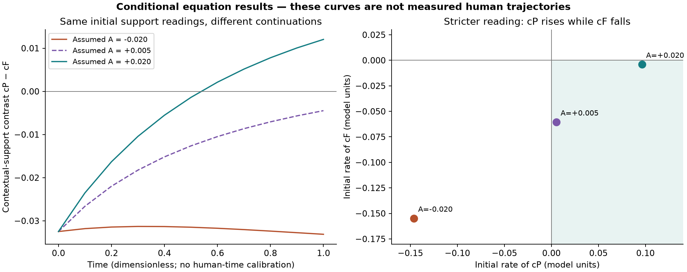
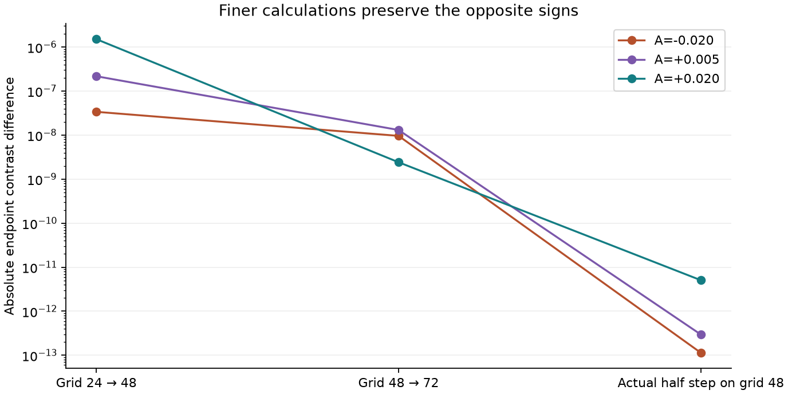

Streams and Rocks · 23 October 2026
Connect the real observations.
Keep the full equations.
Five real inward-experience episodes are connected to Smoke, Clay, personal history and the moving idea. The unchanged coupled field equations were then run against an explicit qualitative interpretation of one episode.
Result: the present account does not choose a unique continuation under this proposed mapping. Different assumed histories satisfy the same observation constraints but produce opposite later contextual-support contrasts. The result survives finer grids and a stricter interpretation of the reported change.
5 episodesone person; manual source coding
75 + 3 runsfull equations; three exploratory follow-ups
No forecast scorelater human outcomes were not measured
What was connected
Smoke marks inward putting-forward. Clay marks receiving, searching, evaluating or reconsidering. The moving idea retains content, expression and reported changes. These are operations within one person. The graph preserves three reported history references without manufacturing a numerical biography.
The available corrected corpus was hash-checked, and selected Miro frames on meaning, memory and hidden states were read live. The source-to-equation mapping identifies every added assumption.
The completed calculation
For sample 10.1, P denotes an understanding/patience alternative and F a frustrated appraisal. Neither is a person or role. We hypothesize that localized readings of the context field S represent their support, and that choosing understanding increases their relative support. The report does not measure these readings or their derivatives.
u_t + (u·∇)u = −∇p + νΔu − (σ/ρ)a(|∇S|−Γcrit)e_k
∇·u = 0
S_t + u·∇S = D_diff ΔS + K_h κA
A_t = γ(U−Ubaseline)
Added observation operator: c_j = ∫ w_j S, ∫ w_j = 1
Primary constraints: c_P > 0, c_F > 0, d(c_P−c_F)/dt > 0
All three response laws, nonlinear advection, pressure, diffusion, the source and accumulator were retained. Stress and field/energy accounting were checked. Future excess input is assumed zero. Inputs, chart geometry, support scale and initial fields are unmeasured conditional assumptions. The utility optimizer cannot be inferred from these records.

Initial supports are identical: cP=0.338312 and cF=0.370799. The primary witness uses A=−0.020 and +0.020. Both meet the primary inequalities. The exploratory stricter reading uses +0.005 and +0.020: cP rises and cF falls in both, yet their final contrasts still have opposite signs. These are hypothetical field states, not measured emotional intensities.
Across the declared search, 48 of 63 candidates satisfy the weak constraints; 60 pairs provide ambiguity witnesses. Those are overlapping model combinations, not 60 independent people or statistical confidence estimates. The main execution includes two duplicate step configurations, documented in the numerical amendment.
Numerical checks

Eight unit tests passed. Source hashes and saved outputs passed their checks. Maximum field-total accounting error was 3.58e-14; divergence RMS 2.47e-17; instantaneous semidiscrete energy-identity residual 2.6e-18. These are numerical diagnostics, not human validation.
With the source disabled, the two initial-accumulator choices give identical fields in this control. Disabling the threshold force does not remove all history sensitivity, because the source still changes S. This identifies model pathways; it does not identify a psychological cause.
What is supported — and what remains open
The primary records support investigating inward presentation, reconsideration, nonverbal alternatives, partial recall and experienced pace. Fog and Wind have partial feature connections. Water's perceived balance, Mist's internalized unspoken agreement and D₂O's small change with a consequential effect are not established by these episodes. Missing observations remain unknown.
The full empirical two-in-one model remains unvalidated. The new observation operator is explicit and testable, but uncalibrated. These selected records informed its construction. The model time is dimensionless; no later human endpoint, independent held-out score, population conclusion or separate Smoke/Clay history evolution was invented. Stronger independent measurements must distinguish the admissible histories and test the proposed readout.
Reproduce and inspect
Study README · Connection and limits · Observation graph · Source hashes and Miro frames · Frozen protocol · Stricter-reading amendment · All 78 run records · Quantitative summary · Verification
python -m pip install -r requirements.txt
python run_tests.py
python check_stronger_reading.py
python -m unittest discover -p 'test_*.py' -v
python verify_saved.py
python build_report.py
Original PDFs remain at the source. This report contains concise attributed descriptions, source locators and hashes. It does not republish the full interviews or Miro boards.